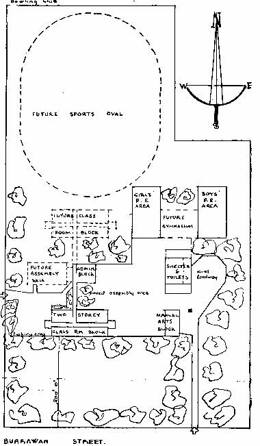
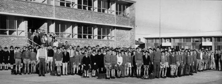
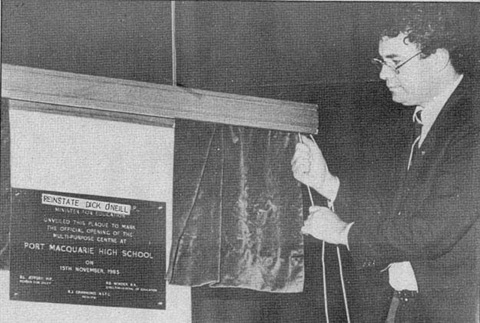
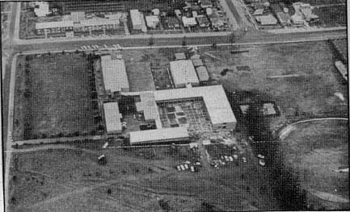

In 1956 what is currently Port Macquarie Primary School became an Intermediate High School, and the Department of Education started planning to establish an independent high school in Port Macquarie.  Six acres of the former golf links was set aside for school purposes, but the public rejected the loss of this land, voting 1542 to 953 for retention of the park in a 1956 referendum. However, the need for a high school grew, and a 1959 referendum passed, allowing construction to start on what is now Port Macquarie High School. Construction delays meant that the school opened later than expected in 1962.
On June 7, 1962, the Port Macquarie High School secondary pupils assembled outside the new buildings in Owen Street to be welcomed by the principal, Mr. Condon, before proceeding into the school. Later that week, twenty Norfolk Island pines were planted by school prefects and class captains on the eastern boundary of the site. A plaque bearing the names of the students involved is fixed on the eastern wall of the Manual Arts Training Block.
The school was officially opened on July 19, 1963 by Dr. H. S. Wyndham, Director General of Education in New South Wales.
By late 1963, it was realised that more classroom space was needed to accommodate all of the students. In 1965, a new block of classrooms was constructed, and by 1971 the school contained a library block and another industrial arts block.

After over 20 years, construction on the multi-purpose centre finally started on the 13th of February 1984. The project ended up costing $525,000 - 10 times the amount spent on the original buildings. On November 15th the next year, the MPC was officially opened by Rodney Cavalier, the Minister for Education. The opening was the site of a teacher protest against the education minister, and when the minister unveiled the plaque a sticker was discovered with the words: "REINSTATE DICK O'NEILL".
